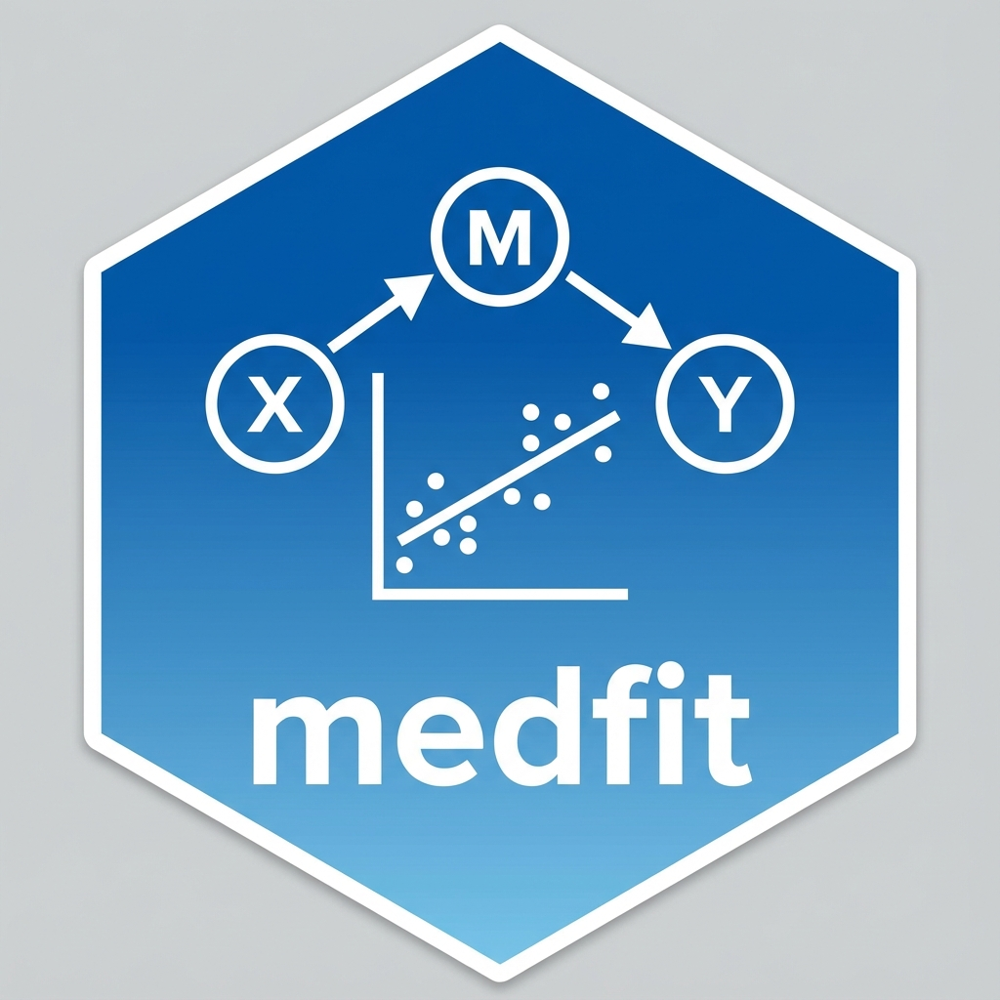

InteractionMediationData: Mediation with Treatment-Mediator Interaction
Source:R/classes.R
InteractionMediationData.RdS7 class for simple mediation with a treatment-by-mediator interaction (\(X \rightarrow M \rightarrow Y\) where the outcome model contains an \(X \times M\) term). It carries VanderWeele's (2014) four-way decomposition of the total effect into controlled direct effect (CDE), reference interaction (INTref), mediated interaction (INTmed), and pure indirect effect (PIE): $$TE = CDE + INTref + INTmed + PIE$$ with \(NDE = CDE + INTref\) and \(NIE = INTmed + PIE\). medfit computes the decomposition; causal interpretation is the user's responsibility (it requires the four no-unmeasured-confounding assumptions of VanderWeele 2014).
Arguments
- a_path
Numeric scalar: treatment -> mediator effect (\(\beta_1\)).
- b_path
Numeric scalar: mediator -> outcome main effect (\(\theta_2\)).
- c_prime
Numeric scalar: treatment -> outcome main effect (\(\theta_1\)).
- interaction
Numeric scalar: treatment x mediator coefficient (\(\theta_3\)).
- cde, int_ref, int_med, pie
Numeric scalars: the four-way components (controlled direct, reference interaction, mediated interaction, pure indirect).
- nde, nie, total_effect
Numeric scalars: derived natural direct effect (CDE + INTref), natural indirect effect (INTmed + PIE), and total effect (the sum of all four components).
- m_star
Numeric scalar: reference mediator level for the decomposition (default 0).
- estimates
Numeric vector of all parameter estimates.
- vcov
Square variance-covariance matrix of
estimates.- sigma_m
Optional numeric scalar mediator residual SD, or NULL.
- sigma_y
Optional numeric scalar outcome residual SD, or NULL.
- treatment, mediator, outcome
Single character strings naming the treatment / mediator / outcome.
- mediator_predictors, outcome_predictors
Character vectors of predictor names for the mediator and outcome models.
- data
Optional data frame, or NULL.
- n_obs
Integer number of observations.
- converged
Logical convergence flag.
- source_package
Character name of the originating package.
Details
Path coefficients follow the outcome model
\(Y = \theta_0 + \theta_1 X + \theta_2 M + \theta_3 XM + \dots\)
and mediator model \(M = \beta_0 + \beta_1 X + \dots\):
a_path = \(\beta_1\), b_path = \(\theta_2\),
c_prime = \(\theta_1\), interaction = \(\theta_3\). With
reference level m_star (\(m^*\)) the components are
\(CDE = \theta_1 + \theta_3 m^*\),
\(INTmed = \theta_3 \beta_1\), and
\(PIE = \theta_2 \beta_1\). When \(\theta_3 = 0\) the
decomposition collapses to standard simple mediation (CDE = NDE = \(\theta_1\);
INTref = INTmed = 0; NIE = PIE = \(\theta_2\beta_1\)).
Examples
# Hand-built object (theta3 = 0.2 interaction, m* = 0)
imd <- InteractionMediationData(
a_path = 0.5, b_path = 0.3, c_prime = 0.1, interaction = 0.2,
cde = 0.1, int_ref = 0.04, int_med = 0.10, pie = 0.15,
nde = 0.14, nie = 0.25, total_effect = 0.39, m_star = 0,
estimates = c(a = 0.5, b = 0.3, c_prime = 0.1, theta3 = 0.2),
vcov = diag(0.01, 4),
treatment = "X", mediator = "M", outcome = "Y",
mediator_predictors = "X", outcome_predictors = c("X", "M", "X:M"),
n_obs = 200L, converged = TRUE, source_package = "medfit"
)
nie(imd) # INTmed + PIE = 0.25
#> Natural Indirect Effect (NIE): 0.25
decompose(imd) # all four components + derived effects
#> cde int_ref int_med pie nde nie total
#> 0.10 0.04 0.10 0.15 0.14 0.25 0.39